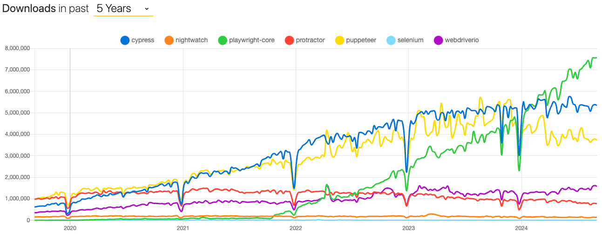
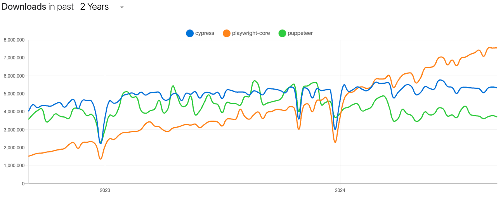
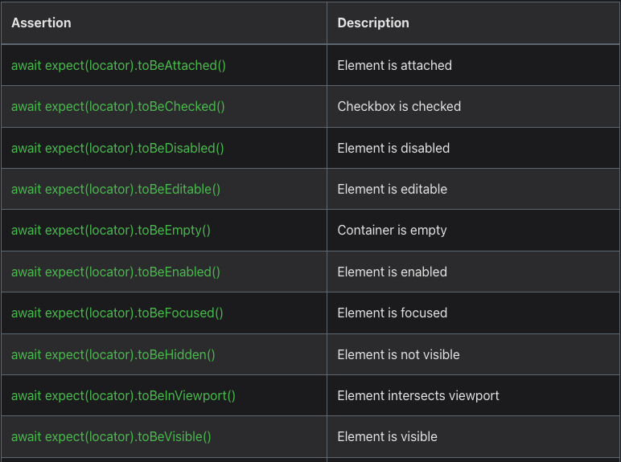
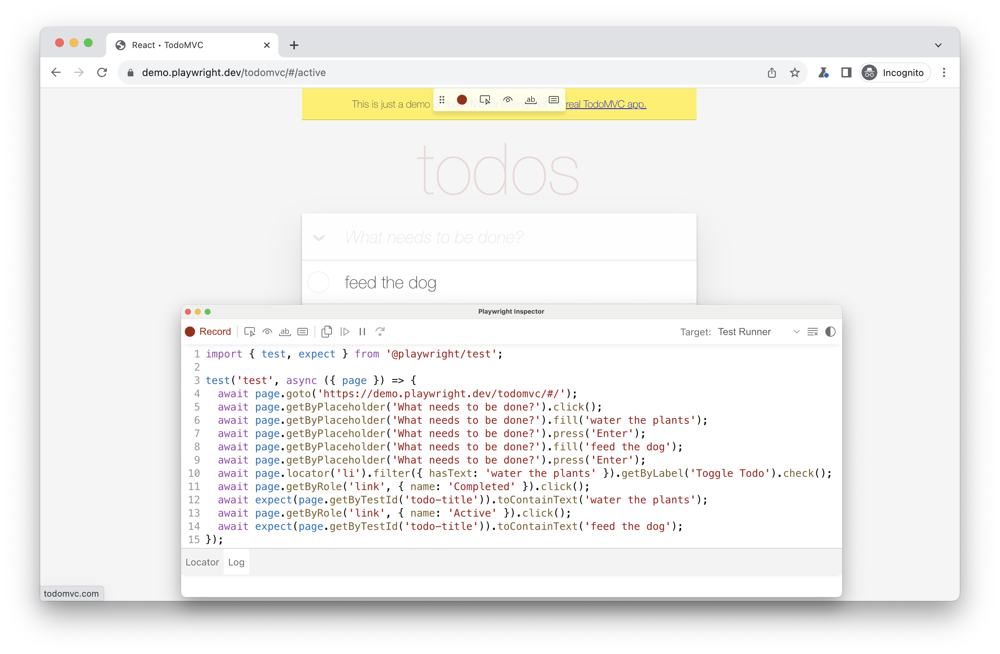
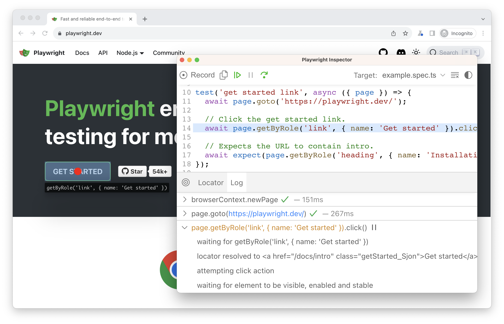
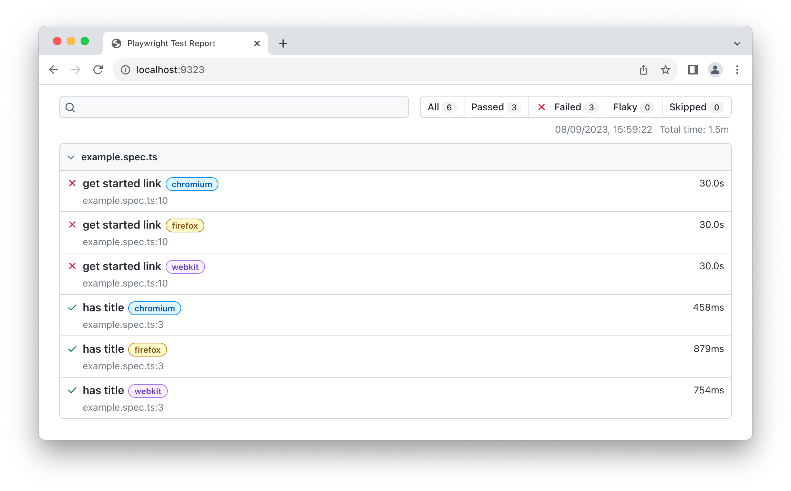
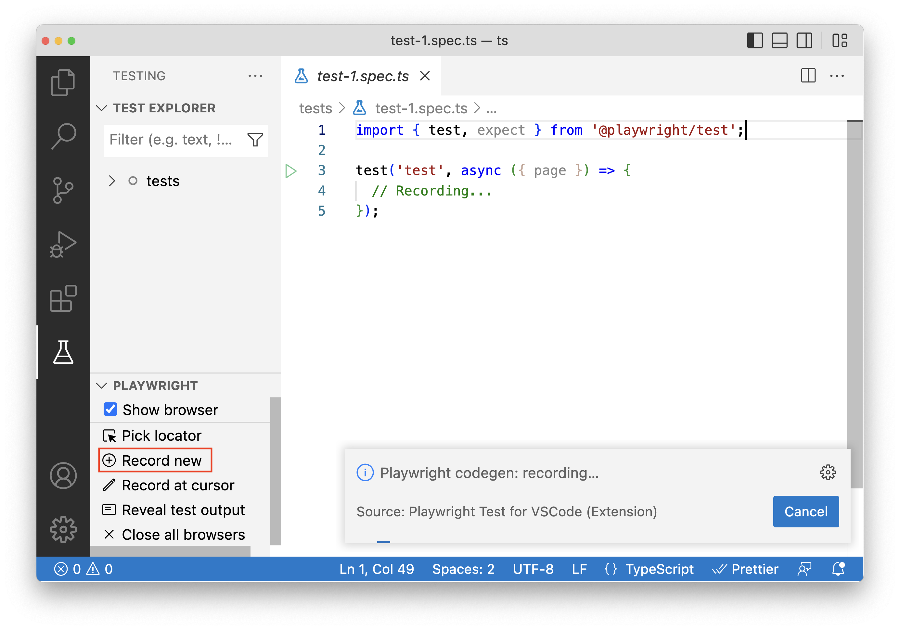

<!DOCTYPE html>
<html lang="en">
<head>
<meta charset="utf-8">
<meta content="width=device-width,initial-scale=1,maximum-scale=1,user-scalable=no" name="viewport">
<title></title>
<link href="dist/reset.css" rel="stylesheet">
<link href="dist/reveal.css" rel="stylesheet">
<link href="css/slides-extended.css" rel="stylesheet">
<link href="dist/theme/blood.css" rel="stylesheet" id="theme">
<link href="plugin/highlight/monokai.css" rel="stylesheet">
<link href="plugin/customcontrols/style.css" rel="stylesheet">
<script src="dist/fontawesome/all.min.js" defer></script>
<script type="text/javascript">
function pageInIframe(){return window.location!==window.parent.location}let forgetPop=!0;function onPopState(e){forgetPop?forgetPop=!1:pageInIframe()&&parent.postMessage(e.target.location.href,"app://obsidian.md")}function fitElements(){const e=document.getElementsByClassName("fitText");for(const t in e)if(Object.hasOwnProperty.call(e,t)){const o=e[t];fitElement(o,1,1e3),o.classList.remove("fitText")}}function fitElement(e,t,o){let n=(o+t)/2;if(e.style.fontSize=`${n}px`,Math.abs(t-o)<1)for(;e.scrollHeight>e.offsetHeight;)n--,e.style.fontSize=`${n}px`;else e.scrollHeight>e.offsetHeight?fitElement(e,t,n):fitElement(e,n,o)}window.onpopstate=onPopState,window.onmessage=e=>{"reload"==e.data&&window.document.location.reload(),forgetPop=!0},document.onreadystatechange=()=>{if(fitElements(),"complete"===document.readyState&&(pageInIframe()&&-1!=window.location.href.indexOf("?export")&&parent.postMessage(event.target.location.href,"app://obsidian.md"),-1!=window.location.href.indexOf("print-pdf"))){let e=setInterval((()=>{clearInterval(e),window.print()}),250)}}
</script>
</head>
<body>
<div class="reveal">
<div class="slides"><section data-markdown><script type="text/template"><!-- .slide: class="drop" template="" -->
<div class="" style="position: absolute; left: 0px; top: 0px; height: 768px; width: 1366px; min-height: 768px; display: flex; flex-direction: column; align-items: center; justify-content: center" absolute="true">

# Dlaczego Playwright?
</div></script></section><section data-markdown><script type="text/template"><!-- .slide: class="drop" template="" -->
<div class="" style="position: absolute; left: 0px; top: 0px; height: 768px; width: 1366px; min-height: 768px; display: flex; flex-direction: column; align-items: center; justify-content: center" absolute="true">

## Trochę historii

| Framework  | 1 commit |          Wspierane języki          |
| ---------- |:--------:|:----------------------------------:|
| Selenium   |   2004   | .NET, Java, Ruby, Python, JavaScript |
| Cypress    |   2017   |             JavaScript             |
| Playwright |   2020   |    .NET, Java, Python, JavaScript    |
<div class="" style="font-size: 20px; position: absolute; left: 50%; top: 90%; height: 10%; width: 50%; display: flex; flex-direction: column; align-items: center; justify-content: center" >

Selenium 4.0.0 ukazał się z końcem października 2021
</div>
</div></script></section><section data-markdown><script type="text/template"><!-- .slide: class="drop" template="" -->
<div class="" style="position: absolute; left: 0px; top: 0px; height: 768px; width: 1366px; min-height: 768px; display: flex; flex-direction: column; align-items: center; justify-content: center" absolute="true">

## Ilość pobrań




<div class="" style="font-size: 16px; position: absolute; left: 90%; top: 90%; height: 10%; width: 10%; display: flex; flex-direction: column; align-items: center; justify-content: center" >


żródło: npm trends

</div>
</div></script></section><section data-markdown><script type="text/template"><!-- .slide: class="drop" template="" -->
<div class="" style="position: absolute; left: 0px; top: 0px; height: 768px; width: 1366px; min-height: 768px; display: flex; flex-direction: column; align-items: center; justify-content: center" absolute="true">

## Ilość pobrań




<div class="" style="font-size: 16px; position: absolute; left: 90%; top: 90%; height: 10%; width: 10%; display: flex; flex-direction: column; align-items: center; justify-content: center" >


żródło: npm trends

</div>
</div></script></section><section data-markdown><script type="text/template"><!-- .slide: class="drop" template="" -->
<div class="" style="position: absolute; left: 0px; top: 0px; height: 768px; width: 1366px; min-height: 768px; display: flex; flex-direction: column; align-items: center; justify-content: center" absolute="true">

## Problemy Selenium

- &shy;<!-- .element: class="fragment" data-fragment-index="1" -->webdriver version hell
- &shy;<!-- .element: class="fragment" data-fragment-index="2" -->Shadow DOM (wprowadzone w 4.x)
- &shy;<!-- .element: class="fragment" data-fragment-index="3" -->network (wprowadzone w 4.x przez DevTools)
- &shy;<!-- .element: class="fragment" data-fragment-index="4" -->brak natywnego API dla testowania REST API
- &shy;<!-- .element: class="fragment" data-fragment-index="5" -->testowanie mobile
- &shy;<!-- .element: class="fragment" data-fragment-index="6" -->explicit, implicit, fluent wait
- &shy;<!-- .element: class="fragment" data-fragment-index="7" -->nagrywanie video z testu
- &shy;<!-- .element: class="fragment" data-fragment-index="8" -->nagrywanie komunikacji
- &shy;<!-- .element: class="fragment" data-fragment-index="9" -->... ogólnie debugowanie testu
</div></script></section><section data-markdown><script type="text/template"><!-- .slide: class="drop" template="" -->
<div class="" style="position: absolute; left: 0px; top: 0px; height: 768px; width: 1366px; min-height: 768px; display: flex; flex-direction: column; align-items: center; justify-content: center" absolute="true">

# Playwright
</div></script></section><section data-markdown><script type="text/template"><!-- .slide: class="drop" template="" -->
<div class="" style="position: absolute; left: 0px; top: 0px; height: 768px; width: 1366px; min-height: 768px; display: flex; flex-direction: column; align-items: center; justify-content: center" absolute="true">

## Filozofia

- &shy;<!-- .element: class="fragment" data-fragment-index="1" -->wbudowana instalacja zależności
- &shy;<!-- .element: class="fragment" data-fragment-index="2" -->wsparcie dla wielu okien przeglądarek (tzw. [browser context](https://playwright.dev/docs/api/class-browsercontext))
- &shy;<!-- .element: class="fragment" data-fragment-index="3" -->wsparcie dla wielu tabów (tzw. [page context](https://playwright.dev/docs/api/class-page))
- &shy;<!-- .element: class="fragment" data-fragment-index="4" -->wsparcie dla Shadow DOM i iframe
- &shy;<!-- .element: class="fragment" data-fragment-index="5" -->mockowanie i modyfikacja REST API
- &shy;<!-- .element: class="fragment" data-fragment-index="6" -->logowanie testu: screenshots, video, tracing
- &shy;<!-- .element: class="fragment" data-fragment-index="7" -->wbudowane narzędzia: Codegen, Inspector, Trace Viewer, Report
- &shy;<!-- .element: class="fragment" data-fragment-index="8" -->łatwa konfiguracja
- &shy;<!-- .element: class="fragment" data-fragment-index="9" -->tagi, grupowanie, parametryzacja, zrównoleglenie, itp.
</div></script></section><section data-markdown><script type="text/template"><!-- .slide: class="drop" template="" -->
<div class="" style="position: absolute; left: 0px; top: 0px; height: 768px; width: 1366px; min-height: 768px; display: flex; flex-direction: column; align-items: center; justify-content: center" absolute="true">

## Mobile

- &shy;<!-- .element: class="fragment" data-fragment-index="1" -->emulacja Google Chrome dla Androida
- &shy;<!-- .element: class="fragment" data-fragment-index="2" -->emulacja Safari
- &shy;<!-- .element: class="fragment" data-fragment-index="3" -->[touch screen tap](https://playwright.dev/docs/api/class-touchscreen)

```javascript
const { chromium, devices } = require('playwright');

const browser = await chromium.launch();
const iphone13 = devices['iPhone 13'];

const context = await browser.newContext({
  ...iphone13,
});
```

<!-- .element: class="fragment" data-fragment-index="4" -->
</div></script></section><section data-markdown><script type="text/template"><!-- .slide: class="drop" template="" -->
<div class="" style="position: absolute; left: 0px; top: 0px; height: 768px; width: 1366px; min-height: 768px; display: flex; flex-direction: column; align-items: center; justify-content: center" absolute="true">

## Auto-wait

czyli np. dla [locator.click()](https://playwright.dev/docs/api/class-locator), Playwright upewni się, że:

- &shy;<!-- .element: class="fragment" data-fragment-index="1" -->locator wskazuje tylko 1 element,
- &shy;<!-- .element: class="fragment" data-fragment-index="2" -->element jest [Visible](https://playwright.dev/docs/actionability#visible)
- &shy;<!-- .element: class="fragment" data-fragment-index="3" -->element jest [Stable](https://playwright.dev/docs/actionability#stable) - nie jest przekształcany
- &shy;<!-- .element: class="fragment" data-fragment-index="4" -->element [Receives Events](https://playwright.dev/docs/actionability#receives-events ) - nie jest przesłonięty
- &shy;<!-- .element: class="fragment" data-fragment-index="5" -->element jest [Enabled](https://playwright.dev/docs/actionability#enabled)
- &shy;<!-- .element: class="fragment" data-fragment-index="6" -->element jest [Editable](https://playwright.dev/docs/actionability#editable) - nie jest `readonly`
</div></script></section><section data-markdown><script type="text/template"><!-- .slide: class="drop" template="" -->
<div class="" style="position: absolute; left: 0px; top: 0px; height: 768px; width: 1366px; min-height: 768px; display: flex; flex-direction: column; align-items: center; justify-content: center" absolute="true">


<div class="" style="font-size: 20px" >

Dokumentacja Playwright - sekcja [Auto-waiting](https://playwright.dev/docs/actionability)
</div>
</div></script></section><section data-markdown><script type="text/template"><!-- .slide: class="drop" template="" -->
<div class="" style="position: absolute; left: 0px; top: 0px; height: 768px; width: 1366px; min-height: 768px; display: flex; flex-direction: column; align-items: center; justify-content: center" absolute="true">

## Asercje

- &shy;<!-- .element: class="fragment" data-fragment-index="1" -->uniwersalne, tzn. można sprawdzić każdy stan
- &shy;<!-- .element: class="fragment" data-fragment-index="2" -->prosta składnia
- &shy;<!-- .element: class="fragment" data-fragment-index="3" -->wbudowane error message
- &shy;<!-- .element: class="fragment" data-fragment-index="4" -->unikalny timeout
- &shy;<!-- .element: class="fragment" data-fragment-index="5" -->soft assertions

```javascript
await expect.soft(locator, "Some error").toBeSomething(timeout=10000)

// Avoid running further if there were soft assertion failures.  
expect(test.info().errors).toHaveLength(0);
```
<!-- .element: class="fragment" data-fragment-index="6" -->
</div></script></section><section data-markdown><script type="text/template"><!-- .slide: class="drop" template="" -->
<div class="" style="position: absolute; left: 0px; top: 0px; height: 768px; width: 1366px; min-height: 768px; display: flex; flex-direction: column; align-items: center; justify-content: center" absolute="true">




<div class="" style="font-size: 20px" >

Dokumentacja Playwright - sekcja [Assertions](https://playwright.dev/docs/test-assertions)
</div>
</div></script></section><section data-markdown><script type="text/template"><!-- .slide: class="drop" template="" -->
<div class="" style="position: absolute; left: 0px; top: 0px; height: 768px; width: 1366px; min-height: 768px; display: flex; flex-direction: column; align-items: center; justify-content: center" absolute="true">

## Timeouty

- &shy;<!-- .element: class="fragment" data-fragment-index="1" -->pojedynczej akcji
- &shy;<!-- .element: class="fragment" data-fragment-index="2" -->nawigacji
- &shy;<!-- .element: class="fragment" data-fragment-index="3" -->asercji
- &shy;<!-- .element: class="fragment" data-fragment-index="4" -->`beforeAll` \ `afterAll`
- &shy;<!-- .element: class="fragment" data-fragment-index="5" -->fixtury
- &shy;<!-- .element: class="fragment" data-fragment-index="6" -->czas trwania testu
- &shy;<!-- .element: class="fragment" data-fragment-index="7" -->czas trwania wszystkich testów (tylko globalnie)

<div class="" style="font-size: 20px" >

Dokumentacja Playwright - sekcja [Assertions](https://playwright.dev/docs/test-timeouts)
</div>
<!-- .element: class="fragment" data-fragment-index="9" -->
</div></script></section><section data-markdown><script type="text/template"><!-- .slide: class="drop" template="" -->
<div class="" style="position: absolute; left: 0px; top: 0px; height: 768px; width: 1366px; min-height: 768px; display: flex; flex-direction: column; align-items: center; justify-content: center" absolute="true">

## Lokatory

- &shy;<!-- .element: class="fragment" data-fragment-index="1" -->[page.getByRole(...)](https://playwright.dev/docs/locators#locate-by-role), np. przycisk
- &shy;<!-- .element: class="fragment" data-fragment-index="2" -->[page.getByText(...)](https://playwright.dev/docs/locators#locate-by-text)
- &shy;<!-- .element: class="fragment" data-fragment-index="3" -->[page.getByLabel(...)](https://playwright.dev/docs/locators#locate-by-label) w formularzach
- &shy;<!-- .element: class="fragment" data-fragment-index="4" -->[page.getByPlaceholder(...)](https://playwright.dev/docs/locators#locate-by-placeholder) w polu `input`
- &shy;<!-- .element: class="fragment" data-fragment-index="5" -->[page.getByAltText(...)](https://playwright.dev/docs/locators#locate-by-alt-text) alternatywny tekst np. w elemencie `img`
- &shy;<!-- .element: class="fragment" data-fragment-index="6" -->[page.getByTitle(...)](https://playwright.dev/docs/locators#locate-by-title)
- &shy;<!-- .element: class="fragment" data-fragment-index="7" -->[page.getByTestId(...)](https://playwright.dev/docs/locators#locate-by-test-id) przez wartość atrybutu `data-testid`
- &shy;<!-- .element: class="fragment" data-fragment-index="8" -->[page.locator("css=...")](https://playwright.dev/docs/locators#locate-by-css-or-xpath)  
- &shy;<!-- .element: class="fragment" data-fragment-index="9" -->[page.locator("xpath=...")](https://playwright.dev/docs/locators#locate-by-css-or-xpath)
- &shy;<!-- .element: class="fragment" data-fragment-index="10" -->[page.locator("_react=...")](https://playwright.dev/docs/other-locators#react-locator)
- &shy;<!-- .element: class="fragment" data-fragment-index="11" -->[page.locator("_vue=...")](https://playwright.dev/docs/other-locators#vue-locator)
- &shy;<!-- .element: class="fragment" data-fragment-index="12" -->..., bo można definiować własne
</div></script></section><section data-markdown><script type="text/template"><!-- .slide: class="drop" template="" -->
<div class="" style="position: absolute; left: 0px; top: 0px; height: 768px; width: 1366px; min-height: 768px; display: flex; flex-direction: column; align-items: center; justify-content: center" absolute="true">

## Sztuczki z lokatorami

```javascript [1-5| 6-11|13]
page.getByRole("listitem").filter(
    hasText="Product 2"
).getByRole(
    "button", name="Add to cart"
).click()

page.getByRole("listitem").filter(
    hasPage.getByRole("heading", name="Product 2")  
).getByRole(
    "button", name="Add to cart"
).click()

page.getByRole("button").and(page.getByTitle("Subscribe"))
```

W dokumentacji jest więcej o: [filtrach](https://playwright.dev/docs/locators#filtering-locators), [operatorach](https://playwright.dev/docs/locators#locator-operators) i [innych](https://playwright.dev/docs/api/class-locator#locator-first)
</div></script></section><section data-markdown><script type="text/template"><!-- .slide: class="drop" template="" -->
<div class="" style="position: absolute; left: 0px; top: 0px; height: 768px; width: 1366px; min-height: 768px; display: flex; flex-direction: column; align-items: center; justify-content: center" absolute="true">

## Mockowanie REST API

```javascript [1-14|1,13|2-6|8-9|11-12]
test("mocks a fruit and doesn't call api", async ({ page }) => {  
  // Mock the api call before navigating  
  await page.route('*/**/api/v1/fruits', async route => {  
    const json = [{ name: 'Strawberry', id: 21 }];  
    await route.fulfill({ json });  
  });
    
  // Go to the page  
  await page.goto('https://demo.playwright.dev/api-mocking');  
  
  // Assert that the Strawberry fruit is visible  
  await expect(page.getByText('Strawberry')).toBeVisible();  
});
```
</div></script></section><section data-markdown><script type="text/template"><!-- .slide: class="drop" template="" -->
<div class="" style="position: absolute; left: 0px; top: 0px; height: 768px; width: 1366px; min-height: 768px; display: flex; flex-direction: column; align-items: center; justify-content: center" absolute="true">

## Instalacja

```bash [1|3|5|1-5]
npm init playwright@latest

npx playwright install --with-deps

npx playwright --version
```
</div></script></section><section data-markdown><script type="text/template"><!-- .slide: class="drop" template="" -->
<div class="" style="position: absolute; left: 0px; top: 0px; height: 768px; width: 1366px; min-height: 768px; display: flex; flex-direction: column; align-items: center; justify-content: center" absolute="true">

## .env i direnv

```bash [1-3]
QA_PLAYWRIGHT_BROWSER=chromium  
QA_PLAYWRIGHT_HEADLESS=false  
QA_PLAYWRIGHT_TRACING_ENABLE=true
```
</div></script></section><section data-markdown><script type="text/template"><!-- .slide: class="drop" template="" -->
<div class="" style="position: absolute; left: 0px; top: 0px; height: 768px; width: 1366px; min-height: 768px; display: flex; flex-direction: column; align-items: center; justify-content: center" absolute="true">

## Codegen
</div></script></section><section data-markdown><script type="text/template"><!-- .slide: class="drop" template="" -->
<div class="" style="position: absolute; left: 0px; top: 0px; height: 768px; width: 1366px; min-height: 768px; display: flex; flex-direction: column; align-items: center; justify-content: center" absolute="true">

`npx playwright codegen demo.playwright.dev/todomvc`


</div></script></section><section data-markdown><script type="text/template"><!-- .slide: class="drop" template="" -->
<div class="" style="position: absolute; left: 0px; top: 0px; height: 768px; width: 1366px; min-height: 768px; display: flex; flex-direction: column; align-items: center; justify-content: center" absolute="true">

## Inspector
</div></script></section><section data-markdown><script type="text/template"><!-- .slide: class="drop" template="" -->
<div class="" style="position: absolute; left: 0px; top: 0px; height: 768px; width: 1366px; min-height: 768px; display: flex; flex-direction: column; align-items: center; justify-content: center" absolute="true">

`npx playwright test --debug`


</div></script></section><section data-markdown><script type="text/template"><!-- .slide: class="drop" template="" -->
<div class="" style="position: absolute; left: 0px; top: 0px; height: 768px; width: 1366px; min-height: 768px; display: flex; flex-direction: column; align-items: center; justify-content: center" absolute="true">

## Trace viewer
</div></script></section><section data-markdown><script type="text/template"><!-- .slide: class="drop" template="" -->
<div class="" style="position: absolute; left: 0px; top: 0px; height: 768px; width: 1366px; min-height: 768px; display: flex; flex-direction: column; align-items: center; justify-content: center" absolute="true">

`npx playwright show-trace trace.zip`


</div></script></section><section data-markdown><script type="text/template"><!-- .slide: class="drop" template="" -->
<div class="" style="position: absolute; left: 0px; top: 0px; height: 768px; width: 1366px; min-height: 768px; display: flex; flex-direction: column; align-items: center; justify-content: center" absolute="true">

## Test report
</div></script></section><section data-markdown><script type="text/template"><!-- .slide: class="drop" template="" -->
<div class="" style="position: absolute; left: 0px; top: 0px; height: 768px; width: 1366px; min-height: 768px; display: flex; flex-direction: column; align-items: center; justify-content: center" absolute="true">

`npx playwright show-report`


</div></script></section><section data-markdown><script type="text/template"><!-- .slide: class="drop" template="" -->
<div class="" style="position: absolute; left: 0px; top: 0px; height: 768px; width: 1366px; min-height: 768px; display: flex; flex-direction: column; align-items: center; justify-content: center" absolute="true">

## VSCode extension
</div></script></section><section data-markdown><script type="text/template"><!-- .slide: class="drop" template="" -->
<div class="" style="position: absolute; left: 0px; top: 0px; height: 768px; width: 1366px; min-height: 768px; display: flex; flex-direction: column; align-items: center; justify-content: center" absolute="true">


</div></script></section><section data-markdown><script type="text/template"><!-- .slide: class="drop" template="" -->
<div class="" style="position: absolute; left: 0px; top: 0px; height: 768px; width: 1366px; min-height: 768px; display: flex; flex-direction: column; align-items: center; justify-content: center" absolute="true">

## O czym jeszcze nie powiedziałem?

- &shy;<!-- .element: class="fragment" data-fragment-index="1" -->[network](https://playwright.dev/docs/network) - zabawa z requestami, np. abort, zmiana kodu błędy, websockets
- &shy;<!-- .element: class="fragment" data-fragment-index="2" -->[session storage](https://playwright.dev/docs/auth#session-storage)
- &shy;<!-- .element: class="fragment" data-fragment-index="3" -->[wstrzykiwanie JS'a](https://playwright.dev/docs/evaluating)
- &shy;<!-- .element: class="fragment" data-fragment-index="4" -->[dialog windows](https://playwright.dev/docs/dialogs) - wszelkie alerty, itp.
- &shy;<!-- .element: class="fragment" data-fragment-index="5" -->[downloads](https://playwright.dev/docs/downloads) i [uploads](https://playwright.dev/docs/input#upload-files)
- &shy;<!-- .element: class="fragment" data-fragment-index="6" -->[mouse](https://playwright.dev/docs/input#mouse-click) i [keyboard](https://playwright.dev/python/docs/input#keys-and-shortcuts)
- &shy;<!-- .element: class="fragment" data-fragment-index="7" -->[drag & drop](https://playwright.dev/docs/input#drag-and-drop)
- &shy;<!-- .element: class="fragment" data-fragment-index="8" -->[DevTools Protocol](https://playwright.dev/docs/api/class-cdpsession)
- &shy;<!-- .element: class="fragment" data-fragment-index="9" -->..., bo pewnie coś pominąłem 😉 
</div></script></section><section data-markdown><script type="text/template"><!-- .slide: class="drop" template="" -->
<div class="" style="position: absolute; left: 0px; top: 0px; height: 768px; width: 1366px; min-height: 768px; display: flex; flex-direction: column; align-items: center; justify-content: center" absolute="true">

# A teraz
## odrobina praktyki
</div></script></section></div>
</div>
<script src="dist/reveal.js"></script>
<script src="plugin/notes/notes.js"></script>
<script src="plugin/markdown/markdown.js"></script>
<script src="plugin/highlight/highlight.js"></script>
<script src="plugin/zoom/zoom.js"></script>
<script src="plugin/math/math.js"></script>
<script src="plugin/mermaid/mermaid.js"></script>
<script src="plugin/chart/chart.min.js"></script>
<script src="plugin/chart/plugin.js"></script>
<script src="plugin/customcontrols/plugin.js"></script>
<script>
function extend(){const t={};for(let e=0;e<arguments.length;e++){const a=arguments[e];for(const e in a)a.hasOwnProperty(e)&&(t[e]=a[e])}return t}function isLight(t){let e=t.replace("#","");3==e.length&&(e=`${e[0]}${e[0]}${e[1]}${e[1]}${e[2]}${e[2]}`);return(299*parseInt(e.substr(0,2),16)+587*parseInt(e.substr(2,2),16)+114*parseInt(e.substr(4,2),16))/1e3>155}const bgColor=getComputedStyle(document.documentElement).getPropertyValue("--r-background-color").trim();isLight(bgColor)?document.body.classList.add("has-light-background"):document.body.classList.add("has-dark-background");const defaultOptions={controls:!0,progress:!0,history:!0,center:!0,transition:"default",plugins:[RevealMarkdown,RevealHighlight,RevealZoom,RevealNotes,RevealMath.MathJax3,RevealMermaid,RevealChart,RevealCustomControls],allottedTime:12e4,mathjax3:{mathjax:"plugin/math/mathjax/tex-mml-chtml.js"},markdown:{gfm:!0,mangle:!0,pedantic:!1,smartLists:!1,smartypants:!1},mermaid:{theme:isLight?"default":"dark"},customcontrols:{controls:[]}};pageInIframe()&&(defaultOptions.scrollActivationWidth=5);const queryOptions=Reveal().getQueryHash()||{},options=extend(defaultOptions,{controls:!0,progress:!0,slideNumber:!0,center:!0,transition:"slide",transitionSpeed:"default",width:1366,height:768,margin:.04,minScale:.3,maxScale:2},queryOptions)
</script>
<script>Reveal.initialize(options)</script>
</body>
</html>